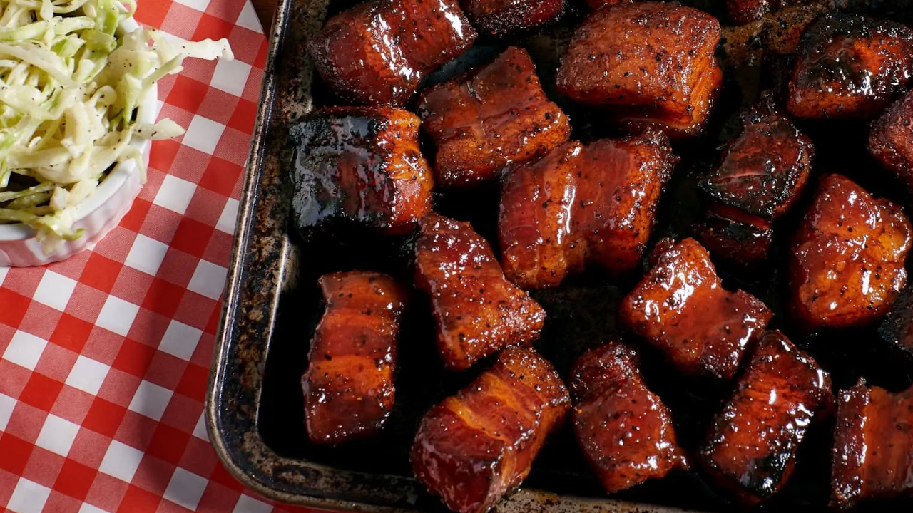

Pork Belly Burnt Ends
Return to Recipes

Description
Smoked pork belly burnt ends are a simple, but flavourful bite-sized snack for BBQs.
Ingredients
Pork
- 1 whole pork belly, 3.6 – 4.5 kg
- ¾ cup brown sugar
- ¼ cup paprika
- 3 tablespoons salt
- 1 tablespoon chilli powder
- 1 tablespoon garlic powder
- 1 tablespoon onion powder
- 2 teaspoons black pepper
- handful apple wood chunks
BBQ Sauce
- 1 cup ketchup
- ½ cup brown sugar
- ¼ cup apple juice
- ¼ cup honey
- 2 tablespoons apple cider vinegar
- 1 teaspoon salt
- ½ teaspoon onion powder
- ½ teaspoon garlic powder
- ¼ teaspoon cayenne pepper
Instructions
- Preheat your smoker to 135°C.
- Slice the pork belly into 4 cm cubes.
- Combine the brown sugar, paprika, salt, chilli powder, garlic powder, onion powder and black pepper, mixing to break up any lumps. Generously spread the mixture over the pork belly cubes, rotating the cubes to ensure that all sides are equally seasoned.
- Place the pork belly cubes in your smoker with 3 to 4 wood chunks on the hot coals. Close the lid and cook for 2 hours.
- Transfer the pork belly cubes onto a large aluminium drip pan and cover with aluminium foil. Place the pan into your smoker for another 2 hours.
- Combine all ingredients for the Sweet & Sticky Barbecue Sauce into a saucepan and bring to a simmer for 10 minutes.
- Uncover the aluminium pan and drain all liquid. Pour the Sweet & Sticky Barbecue Sauce over the pork belly burnt ends and mix until all cubes are evenly coated.
- Place the pan back into the smoker and open the air vents to raise the temperature of the smoker to 170°C. Cook for an additional 10-15 minutes.
- Remove the pan from your smoker and let rest at room temperature for 20 minutes before serving.